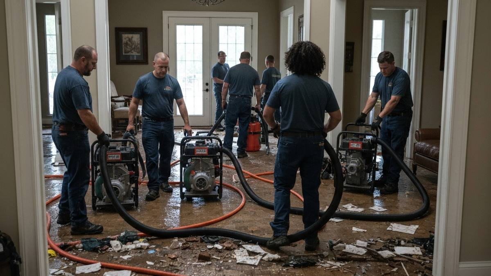

Bixby, proudly known as the "Garden Spot of Oklahoma," has experienced rapid suburban growth in recent years, with its population now exceeding 28,000 residents. The city's expansion south of the Creek Turnpike has brought thousands of newer homes, while established neighborhoods closer to downtown Bixby retain their small-town charm. Despite the prevalence of modern construction, Bixby homeowners are not immune to water damage. Oklahoma's severe spring storms, sudden plumbing failures, and improperly graded new-build lots all contribute to water intrusion risks. Tulsa Water Damage Pros serves the entire Bixby community with fast, professional, IICRC-certified water damage restoration available 24 hours a day, 7 days a week.

Our Water Damage Restoration Process
- Emergency Call & Fast Dispatch — Reach us any time at (918) 723-2096. A certified restoration crew is dispatched to your Bixby home immediately, with most arrivals in under 45 minutes.
- Thorough Damage Assessment — We inspect your entire property using infrared cameras and commercial moisture meters, identifying water penetration in walls, flooring, and the slab foundations common throughout Bixby's newer subdivisions.
- Rapid Water Extraction — Truck-mounted extractors and industrial pumps remove all standing water quickly, whether the source is a broken supply line, storm flooding, or an overflowing appliance near Bentley Park or anywhere in Bixby.
- Controlled Structural Drying — We place commercial dehumidifiers and high-velocity air movers throughout affected areas. Daily moisture monitoring ensures your home reaches safe, dry conditions before we move to repairs.
- Full Restoration & Rebuild — Damaged drywall, flooring, baseboards, and cabinetry are removed and replaced. We restore your Bixby home to its pre-damage condition, handling everything from minor patchwork to complete room reconstruction.
Why Bixby Homeowners Trust Tulsa Water Damage Pros
- New Construction Expertise — Many of Bixby's homes are less than 15 years old. We understand the specific water damage vulnerabilities of modern building materials, including engineered flooring, OSB sheathing, and PEX plumbing systems.
- IICRC-Certified Crews — Every technician holds current certifications from the Institute of Inspection, Cleaning and Restoration Certification, the gold standard in the restoration industry.
- Complete Insurance Assistance — We document all damage with photos, moisture data, and detailed reports, then work directly with your insurance adjuster to expedite your claim and minimize your out-of-pocket costs.
- True 24/7 Availability — Pipe bursts and storms do not follow a schedule. Our crews respond to Bixby emergencies day and night, every day of the year, including holidays.

Frequently Asked Questions — Water Damage Restoration in Bixby
Do newer Bixby homes still get water damage?
Absolutely. While Bixby's newer construction south of the Creek Turnpike uses modern materials, these homes are not immune to water damage. Common issues include improperly graded lots that allow water to pool against foundations, failed supply line connections to appliances, and storm damage from Oklahoma's severe weather. New construction can also have warranty-period plumbing defects that cause sudden leaks.
How fast can you get to a water damage emergency in Bixby?
Our crews can reach most Bixby locations within 45 minutes. We have equipment staged near the south Tulsa corridor, giving us quick access to Bixby neighborhoods including areas near Bentley Park, the subdivisions south of the Creek Turnpike, and the established neighborhoods closer to downtown Bixby.
Will my homeowners insurance cover water damage restoration in Bixby?
Most standard homeowners insurance policies cover sudden and accidental water damage, such as burst pipes or appliance failures. Flood damage from external sources typically requires a separate flood policy. Our team helps Bixby homeowners navigate the claims process by providing detailed damage documentation, direct adjuster communication, and itemized restoration reports.
Need Water Damage Restoration in Bixby? Call Now
We're your local water damage restoration experts serving Bixby and all surrounding areas.
📞 Call (918) 723-2096